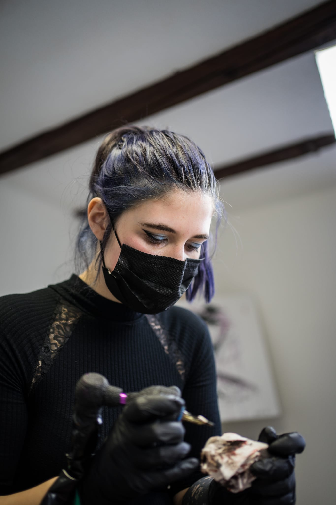

HomunkulaArt

Steckbrief
Name: Darline Vainer
Grösse: 172cm
Augenfarbe: braun
Haarfarbe: blond (gefärbt zur Zeit)
Hobby: zeichnen, Filme schauen, gamen, tätowieren
Geschwister: 1 Schwester
Warum Tätowiererin?
Ich habe mich oft als Kind gefragt was ich später werden möchte. Um ehrlich zu sein habe ich immer daran gezweifelt "gut genug" für Tätowiererin zu sein....